Подборка · данные на 19 октября
Недорогое свидание в Петербурге
20 планов, где каждая остановка обходится примерно до 1 500 ₽ на человека, а часть и вовсе бесплатна: парки, набережные, смотровые площадки. Ниже — ещё 66 мест для свидания с таким же чеком. Цены — ориентир: меню и билеты лучше проверить перед выходом.
- 20 планов
- 66 мест
Планы до 1 500 ₽ на человека 20
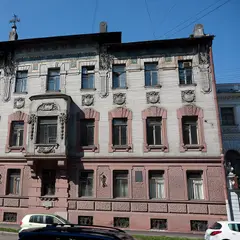
- Музей Набокова · Музей · м. Адмиралтейская
- 1 минута пешкомTeplo · Кафе
Коллекция бабочек в родовом особняке писателя на Большой Морской, а через дорогу — кафе-квартира с диванами и пледами.
Открыть план: Бабочки Набокова и кафе-квартираПозвать сюда: Бабочки Набокова и кафе-квартира
Фото: Vadim Zhivotovsky, CC BY 3.0 · Wikimedia Commons
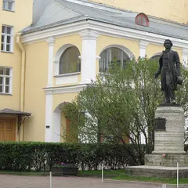
- Музей-квартира Пушкина · Музей · м. Адмиралтейская
- 3 минуты пешкомЧАО Какао · Какаочная
Кабинет и библиотека поэта у Конюшенной, а потом пара минут пешком — какаочная, где наливают густой горячий шоколад из окошка.
Открыть план: Квартира Пушкина и горячий шоколадПозвать сюда: Квартира Пушкина и горячий шоколад
Фото: Alexander Ardatov, CC BY 3.0 · Wikimedia Commons
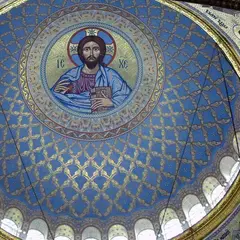
- Кронштадт: Якорная площадь и Морской собор · Прогулочный район · м. Беговая
- дальше на метро или таксиОстров фортов · Парк
Морской собор и тихие улицы города-крепости, а потом — Остров фортов: маяк, аллея флота и форты на горизонте. Между точками — на автобусе или такси.
Открыть план: Кронштадт: собор и фортыПозвать сюда: Кронштадт: собор и форты
Фото: Никонико962, CC BY-SA 4.0 · Wikimedia Commons
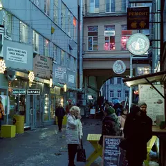
- Лофт Проект «Этажи» · Креативное пространство · м. Лиговский проспект
- 11 минут пешкомSvet Cafe · Кофейня
Выставки и крыша с видом на Лиговский в бывшем хлебозаводе, а потом 11 минут пешком — маленькая светлая кофейня-галерея у Владимирской.
Открыть план: Крыша «Этажей» и кофейня-галереяПозвать сюда: Крыша «Этажей» и кофейня-галерея
Фото: Svetlov Artem, CC0 · Wikimedia Commons
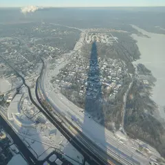
- Лахта Центр: обзорная площадка и набережная · Смотровая площадка · м. Беговая
- 24 минуты пешкомПарк 300-летия Санкт-Петербурга · Парк
Панорама города и залива с самого высокого небоскрёба Европы, а потом прогулка по молу парка 300-летия — солнце садится прямо в воду.
Открыть план: Лахта: 83-й этаж и закат над заливомПозвать сюда: Лахта: 83-й этаж и закат над заливом
Фото: TomPlay148, CC BY-SA 3.0 · Wikimedia Commons
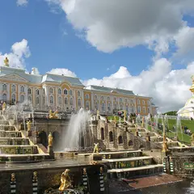
- Нижний парк Петергофа · Парк · ж/д Новый Петергоф
- дальше на метро или таксиПарк Александрия · Парк
Большой каскад и аллеи Нижнего парка до залива, а потом полчаса пешком вдоль воды (или пара минут на такси) — соседняя Александрия: готическая капелла и пустые тропинки.
Открыть план: Петергоф: каскады и АлександрияПозвать сюда: Петергоф: каскады и Александрия
Фото: Клеткин, CC BY-SA 3.0 · Wikimedia Commons
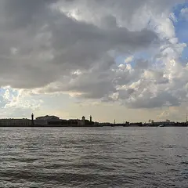
- Дворцовая набережная · Набережная · м. Адмиралтейская
- 6 минут пешкомDaiquiri · Коктейльный бар
Ночная Дворцовая набережная: ждёте, когда поднимут Дворцовый мост, а потом греетесь в баре у Невского — десятки вариаций дайкири до четырёх утра. Мосты разводят до конца ноября.
Открыть план: Разводка Дворцового и ромовые коктейлиПозвать сюда: Разводка Дворцового и ромовые коктейли
Фото: Вячеслав Лобанов, CC BY 3.0 · Wikimedia Commons
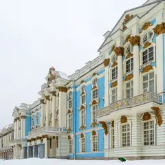
- Екатерининский парк · Парк · ж/д Царское Село
- 10 минут пешкомАлександровский парк (Пушкин) · Парк
Камеронова галерея и Большой пруд Екатерининского парка, а потом — тихий соседний Александровский с Китайской деревней и почти без туристов.
Открыть план: Царское Село: два парка за деньПозвать сюда: Царское Село: два парка за день
Фото: Никонико962, CC BY-SA 4.0 · Wikimedia Commons
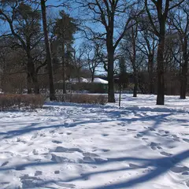
- Парк «Дубки» · Парк · ж/д Сестрорецк
Петровская дубовая роща на мысу, песчаный берег и сосны — электричка до Сестрорецка, и солнце садится прямо над водой.
Открыть план: Дубки: закат над заливомПозвать сюда: Дубки: закат над заливом
Фото: t-rex, CC BY 3.0 · Wikimedia Commons
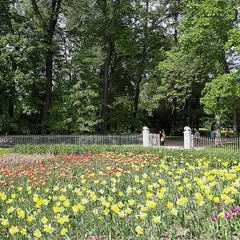
- Елагин остров · Парк · м. Крестовский остров
Остров-парк без машин: пруды, белки, дворец — и западная Стрелка, где провожают солнце над заливом. Осенью тут особенно красиво.
Открыть план: Елагин остров и закат на СтрелкеПозвать сюда: Елагин остров и закат на Стрелке
Фото: Александровы АГ, CC BY-SA 4.0 · Wikimedia Commons
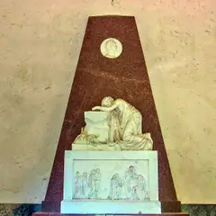
- Павловский парк · Парк · ж/д Павловск
Огромный пейзажный парк с долинами и колоннадой Аполлона; белки берут орешки с ладони — возьмите с собой, будет весело.
Открыть план: Павловск: долины, мостики и белкиПозвать сюда: Павловск: долины, мостики и белки
Фото: Игорь Гордеев, CC BY-SA 4.0 · Wikimedia Commons
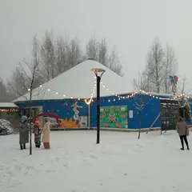
- Упсала-Цирк · Цирк · м. Площадь Ленина
Цирк-шапито с социальной миссией: клоунада и спектакли для взрослых — смешно, трогательно и совсем не похоже на привычный цирк.
Открыть план: Современный цирк в шапитоПозвать сюда: Современный цирк в шапито
Фото: Dinamik, CC BY-SA 4.0 · Wikimedia Commons
- Манеж · Выставочный зал · м. Адмиралтейская
- 4 минуты пешкомTeplo · Кафе
Самая громкая выставка сезона в огромном зале у Исаакия, а потом 4 минуты пешком — уютное кафе с пледами, чтобы согреться и обсудить увиденное.
Открыть план: Выставка в Манеже и пледы в TeploПозвать сюда: Выставка в Манеже и пледы в Teplo
- Кинотеатр «Ленфильм» · Кинотеатр · м. Горьковская
- 2 минуты пешкомТЧК · Кофейня
Фестивальный показ в кинозале на легендарной студии, а после — тихая кофейня во дворе у Каменноостровского со знаменитым вишнёвым пирогом.
Открыть план: Кино на «Ленфильме» и вишнёвый пирогПозвать сюда: Кино на «Ленфильме» и вишнёвый пирог
- Музей-квартира Куинджи · Музей · м. Спортивная
- 6 минут пешкомБиография · Кофейня
Квартира художника с видом на Неву и выход на крышу его мастерской, а потом 6 минут пешком — кофейня, где любят эксперименты с фильтром.
Открыть план: Крыша Куинджи и кофе на ВасильевскомПозвать сюда: Крыша Куинджи и кофе на Васильевском
- Mntn coffee · Кофейня · м. Горный институт
- 2 минуты пешкомСевкабель Порт · Креативное пространство
Берёте кофе в порту и выходите к заливу: бывший кабельный завод, выставки, а главное — закат прямо над водой.
Открыть план: Латте и закат на СевкабелеПозвать сюда: Латте и закат на Севкабеле
- Коломна и Семимостье · Прогулочный район · м. Технологический институт
- 13 минут пешкомРид · Кофейня
Тихий старый квартал у Никольского собора: с одной точки у Пикалова моста видно семь мостов. Потом 13 минут пешком — кофейня с тысячей пятёрок.
Открыть план: Семь мостов Коломны и кофейняПозвать сюда: Семь мостов Коломны и кофейня
- Таврический сад · Сад · м. Чернышевская
- 18 минут пешкомПенка · Кофейня
Пруды с мостиками и холмы любимого сада жителей центра, а потом 18 минут пешком — кофейня у Чернышевской с вишнёвым пирогом и вечерними кинопоказами.
Открыть план: Таврический сад и кофе с пирогомПозвать сюда: Таврический сад и кофе с пирогом
- Эрарта · Музей современного искусства · м. Горный институт
Несколько этажей современного искусства и свой ресторан — можно провести здесь весь вечер и спорить, что хотел сказать художник.
Открыть план: Вечер в «Эрарте»Позвать сюда: Вечер в «Эрарте»
- Ohaüs · Кафе-кофейня · м. Чёрная речка
Розовый домик у Чёрной речки: латте с выпечкой, а по вечерам кинопоказ при заказе — почти готовое свидание.
Открыть план: Кино в розовом домикеПозвать сюда: Кино в розовом домике
Недорогие места для свидания 24 из 66
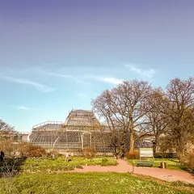
ул. Профессора Попова, 2П
Новое
Старейший ботанический сад страны: дендрарий, японский сад и оранжереи с тропиками; осенью сюда приходят любоваться клёнами.
Подробнее и маршрут: Ботанический сад Петра ВеликогоПозвать сюда: Ботанический сад Петра Великого
Фото: Александровы АГ, CC BY-SA 4.0 · Wikimedia Commons
Елагин остров, 4Т
Новое
Остров-парк без машин: пруды, белки, дворец и Стрелка, где провожают солнце над заливом. Осенью — одно из лучших мест города.
Подробнее и маршрут: Елагин островПозвать сюда: Елагин остров
Фото: Александровы АГ, CC BY-SA 4.0 · Wikimedia Commons
Высотная ул., 1
Новое
Панорама города и залива с 83-го этажа самого высокого небоскрёба Европы, а внизу — набережная для прогулки. Билеты разбирают быстро.
Подробнее и маршрут: Лахта Центр: обзорная площадка и набережнаяПозвать сюда: Лахта Центр: обзорная площадка и набережная
Фото: TomPlay148, CC BY-SA 3.0 · Wikimedia Commons
Лиговский пр., 74
Новое
Бывший хлебозавод с выставками, магазинами, кафе и крышей с видом на Лиговский.
Подробнее и маршрут: Лофт Проект «Этажи»Позвать сюда: Лофт Проект «Этажи»
Фото: Svetlov Artem, CC0 · Wikimedia Commons
Петергоф, Разводная ул., 2
Новое
Каскады, Самсон и аллеи до самого залива — на Петергоф стоит закладывать целый день. Сезон фонтанов уточняйте перед поездкой.
Подробнее и маршрут: Нижний парк ПетергофаПозвать сюда: Нижний парк Петергофа
Фото: Клеткин, CC BY-SA 3.0 · Wikimedia Commons
наб. Адмиралтейского канала, 2
Новое
Остров с выставками, лекциями, кино и маркетами в старых складах; в любое время года есть программа.
Подробнее и маршрут: Новая ГолландияПозвать сюда: Новая Голландия
Фото: Николай Булыкин, CC BY-SA 4.0 · Wikimedia Commons
Павловск, Садовая ул., 20
Новое
Огромный пейзажный парк с долинами, мостиками и колоннадой Аполлона; белки здесь почти ручные — возьмите орешки.
Подробнее и маршрут: Павловский паркПозвать сюда: Павловский парк
Фото: Игорь Гордеев, CC BY-SA 4.0 · Wikimedia Commons
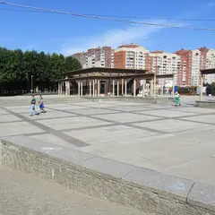
Приморский пр., 74
Новое
Молодой парк на берегу залива: длинный мол, вид на Лахта Центр и закаты прямо над водой — особенно хорош вечером.
Подробнее и маршрут: Парк 300-летия Санкт-ПетербургаПозвать сюда: Парк 300-летия Санкт-Петербурга
Фото: Germash19, CC BY-SA 4.0 · Wikimedia Commons
Дворцовая наб.
Новое
Гранит вдоль Эрмитажа с самым широким видом на Неву, Петропавловку и Стрелку; ночью здесь ждут разводку Дворцового моста.
Подробнее и маршрут: Дворцовая набережнаяПозвать сюда: Дворцовая набережная
Фото: Вячеслав Лобанов, CC BY 3.0 · Wikimedia Commons
Пушкин, Садовая ул., 7
Новое
Парк Царского Села с Камероновой галереей, Большим прудом и павильонами; осенью — один из самых красивых маршрутов области.
Подробнее и маршрут: Екатерининский паркПозвать сюда: Екатерининский парк
Фото: Никонико962, CC BY-SA 4.0 · Wikimedia Commons
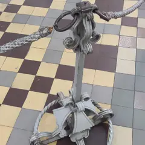
Биржевая площадь, 2
Новое
Скелеты китов, мамонтёнок и тысячи чучел зверей: удивительно интересно в любом возрасте.
Подробнее и маршрут: Зоологический музейПозвать сюда: Зоологический музей
Фото: Александр Сигачёв, CC BY-SA 4.0 · Wikimedia Commons
Кронштадт, Якорная площадь, 1
Новое
Город-крепость на острове: величественный Морской собор, каналы, доки и тихие улицы с флотской историей — поездка на день.
Подробнее и маршрут: Кронштадт: Якорная площадь и Морской соборПозвать сюда: Кронштадт: Якорная площадь и Морской собор
Фото: Никонико962, CC BY-SA 4.0 · Wikimedia Commons
Университетская наб., 3
Новое
Первый музей России: заспиртованные диковины Петра I и этнография со всех континентов.
Подробнее и маршрут: КунсткамераПозвать сюда: Кунсткамера
Фото: Никонико962, CC BY-SA 4.0 · Wikimedia Commons
Литейный пр., 53В
Новое
Квартира поэта во флигеле Шереметевского дворца, тихий сад и вечера поэзии в атмосфере эпохи.
Подробнее и маршрут: Музей Анны Ахматовой в Фонтанном домеПозвать сюда: Музей Анны Ахматовой в Фонтанном доме
Фото: MilanSPb, CC BY-SA 4.0 · Wikimedia Commons
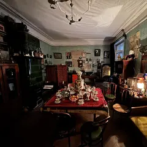
ул. Рубинштейна, 23
Новое
Квартира Сергея Довлатова на Рубинштейна: история писателя и Ленинграда 70-х в одном доме.
Подробнее и маршрут: Музей ДовлатоваПозвать сюда: Музей Довлатова
Фото: Kommunalka1912, CC BY-SA 4.0 · Wikimedia Commons
Большая Морская ул., 47
Новое
Родовой особняк писателя на Большой Морской: коллекция бабочек, семейная история и небольшие выставки.
Подробнее и маршрут: Музей НабоковаПозвать сюда: Музей Набокова
Фото: Vadim Zhivotovsky, CC BY 3.0 · Wikimedia Commons
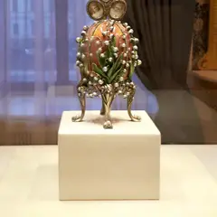
наб. реки Фонтанки, 21
Новое
Императорские пасхальные яйца и ювелирка в Шуваловском дворце — красиво, нарядно и не слишком долго.
Подробнее и маршрут: Музей ФабержеПозвать сюда: Музей Фаберже
Фото: GAlexandrova, CC BY-SA 4.0 · Wikimedia Commons
наб. реки Мойки, 12
Новое
Последняя квартира поэта у Конюшенной: кабинет, библиотека и история последней дуэли.
Подробнее и маршрут: Музей-квартира ПушкинаПозвать сюда: Музей-квартира Пушкина
Фото: Alexander Ardatov, CC BY 3.0 · Wikimedia Commons
Сестрорецк, Большой Литейный пер., 37
Новое
Петровская дубовая роща на мысу у залива: песчаный берег, сосны и закаты прямо над водой — легко доехать на электричке.
Подробнее и маршрут: Парк «Дубки»Позвать сюда: Парк «Дубки»
Фото: t-rex, CC BY 3.0 · Wikimedia Commons
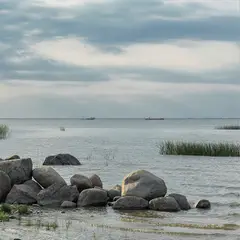
Петергоф, парк Александрия
Новое
Пейзажный парк-дача у моря по соседству с Нижним парком: готическая капелла, Коттедж и пустые тропинки вдоль залива.
Подробнее и маршрут: Парк АлександрияПозвать сюда: Парк Александрия
Фото: Egregiu, CC BY-SA 4.0 · Wikimedia Commons
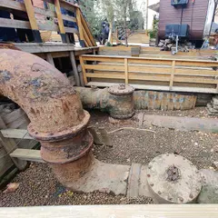
наб. Обводного канала, 74Ц
Новое
Купол в старом газгольдере — один из крупнейших в мире: звёздные программы, лекции и концерты.
Подробнее и маршрут: Планетарий №1Позвать сюда: Планетарий №1
Фото: Анастасия Юрьевна Львова, CC BY-SA 4.0 · Wikimedia Commons
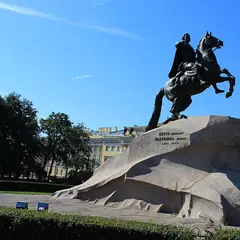
Сенатская пл.
Новое
Пётр на гранитной скале и выход к Неве с видом на Васильевский — обязательная точка первой прогулки по центру.
Подробнее и маршрут: Сенатская площадь и Медный всадникПозвать сюда: Сенатская площадь и Медный всадник
Фото: Huanivanovich, CC BY-SA 3.0 · Wikimedia Commons
Университетская наб., 17
Новое
Египетские сфинксы у спуска к воде перед Академией художеств и вид на Исаакий через Неву — идеальная точка на закате.
Подробнее и маршрут: Университетская набережная и сфинксыПозвать сюда: Университетская набережная и сфинксы
Фото: Никонико962, CC BY-SA 4.0 · Wikimedia Commons
Свердловская наб., 44Ю
Новое
Цирк-шапито с социальной миссией: современный цирк, клоунада и спектакли для взрослых.
Подробнее и маршрут: Упсала-ЦиркПозвать сюда: Упсала-Цирк
Фото: Dinamik, CC BY-SA 4.0 · Wikimedia Commons


Как позвать
- Выбери план, место или событие — в карточке адрес, цены и маршрут в Яндекс Картах.
- Нажми «Позвать сюда» — соберётся приглашение-игра для свидания или голосование для компании.
- Отправь ссылку в любой мессенджер: тебе ответят, а компания отметит, куда и когда может. Бесплатно и без регистрации.